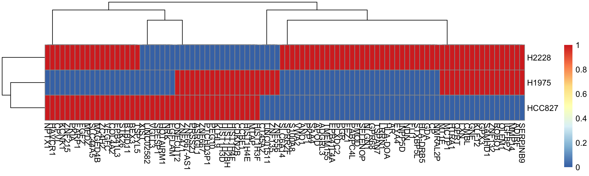

constructing-markers-from-purified-data.RmdIn many situations, marker genes for cell types are either known a priori as expert knowledge, or can be curated through databases such as the Cellmark database. Alternatively, if purified expression data exists (either in bulk or single-cell form), it is possible to quickly derive marker genes using the findMarkers function in the scran R package.
Below we detail a case study in deriving marker genes through a differential expression approach.
We take bulk RNA-seq data from Holik et al. Nucleic Acids Research 2017 to derive marker genes for 3 different cell lines. This is packaged with cellassign as holik_data:
which contains a matrix of counts, where each row is a gene (index by entrez ID) and each column is a sample:
head(holik_data$counts[,1:2])
#> RSCE_10_BC2CTUACXX_AGTTCC_L006_R1.bam RSCE_12_BC2CTUACXX_TGACCA_L005_R1.bam
#> 1 13 12
#> 2 0 0
#> 9 346 286
#> 10 0 1
#> 12 10 17
#> 13 1 0as well as a vector with the cell line of origin for each sample:
We first provide a map from entrez IDs to gene symbols:
entrez_map <- select(org.Hs.eg.db,
as.character(rownames(holik_data$counts)),
c("SYMBOL"), "ENTREZID")
#> 'select()' returned 1:1 mapping between keys and columns
gene_annotations <- entrez_map %>%
dplyr::rename(GeneID=ENTREZID,
Symbol=SYMBOL)Then construct the DGEList object for input to limma voom, filtering out lowly expressed genes:
dge <- DGEList(counts = holik_data$counts,
group = holik_data$cell_line,
genes = gene_annotations,
remove.zeros = TRUE)
#> Removing 3620 rows with all zero counts
genes_to_keep <- rowSums(cpm(dge$counts) > 0.5) >= 2
dge_filt <- dge[genes_to_keep,]and finally calculate the normalization factors:
We next perform differential expression using Limma Voom on a subset of 3 samples: HCC827, H2228, H1975:
dge_subset <- dge_filt[,dge_filt$samples$group %in% c("HCC827", "H2228", "H1975")]
design <- model.matrix(~ 0+dge_subset$samples$group)
colnames(design) <- levels(dge_subset$samples$group)
v <- voom(dge_subset, design)
fit <- lmFit(v, design)Next, fit constrasts to find differentially expressed genes between cell types:
contrast.matrix <- makeContrasts(H2228 - H1975,
HCC827 - H1975,
HCC827 - H2228,
levels = design)
fit2 <- contrasts.fit(fit, contrast.matrix)
fit2 <- eBayes(fit2)Finally, compute gene summary statistics and filter to only significantly differentially expressed geens (FDR < 0.05):
tt <- topTable(fit2, n=Inf)
tt_sig <- tt %>%
dplyr::filter(adj.P.Val < 0.05)
head(tt_sig)
#> GeneID Symbol H2228...H1975 HCC827...H1975 HCC827...H2228 AveExpr
#> 1 1956 EGFR 0.68777340 4.303436 3.615662 9.208711
#> 2 23480 SEC61G -0.40115418 4.414580 4.815734 7.784072
#> 3 81552 VOPP1 -0.09640406 4.347392 4.443796 6.998559
#> 4 1362 CPD 2.12265278 -2.103571 -4.226224 8.704180
#> 5 729086 LOC729086 -0.04338772 4.384976 4.428363 6.555193
#> 6 55915 LANCL2 -0.57454448 4.021963 4.596508 6.568625
#> F P.Value adj.P.Val
#> 1 2026.616 3.447052e-12 2.982899e-08
#> 2 2003.024 3.623981e-12 2.982899e-08
#> 3 1766.548 6.199752e-12 3.232724e-08
#> 4 1671.376 7.854996e-12 3.232724e-08
#> 5 1506.362 1.224645e-11 3.628466e-08
#> 6 1479.497 1.322488e-11 3.628466e-08To derive marker genes, we first create a log fold change matrix using H1975 as the baseline expression:
lfc_table <- tt_sig[,c("H2228...H1975", "HCC827...H1975")]
lfc_table <- lfc_table %>%
dplyr::mutate(H1975=0,
H2228=H2228...H1975,
HCC827=HCC827...H1975) %>%
dplyr::select(H1975, H2228, HCC827)
rownames(lfc_table) <- tt_sig$GeneIDThen, for each gene, we subtract the minimum log fold change, as we care about overexpression of genes relative to some minimum expression level, as this defines a marker gene:
lfc_table <- as.matrix(lfc_table)
lfc_table <- lfc_table - rowMins(lfc_table)
lfc_table <- as.data.frame(lfc_table)We now define a helper function for turning log fold changes into a binary matrix. This takes a matrix and a threshold, and any values less than or equal to the threshold are set to 0, and all others to 1:
binarize <- function(x, threshold) {
x[x <= threshold] <- -Inf
x[x > -Inf] <- 1
x[x == -Inf] <- 0
return(x)
}Next, we implement a basic procedure for binarizing this matrix. Essentially, we look for the largest ‘gap’ in expression for each gene, and the cell types with expression above this gap are designated has having that gene as a marker:
# Find the biggest difference
maxdiffs <- apply(lfc_table, 1, function(x) max(diff(sort(x))))
#
thres_vals <- apply(lfc_table, 1, function(x) sort(x)[which.max(diff(sort(x)))])
expr_mat_thres <- plyr::rbind.fill(lapply(1:nrow(lfc_table), function(i) {
binarize(lfc_table[i,], thres_vals[i])
}))
rownames(expr_mat_thres) <- rownames(lfc_table)
marker_gene_mat <- expr_mat_thres[(maxdiffs >= quantile(maxdiffs, c(.99)))
& (thres_vals <= log(2)),] %>%
as.matrixFinally, we add back in gene symbols rather than entrez ids:
suppressMessages({
symbols <- plyr::mapvalues(
rownames(marker_gene_mat),
from = gene_annotations$GeneID,
to = gene_annotations$Symbol
)
})
is_na <- is.na(symbols)
marker_gene_mat <- marker_gene_mat[!is_na,]
rownames(marker_gene_mat) <- symbols[!is_na]And there we have a marker gene matrix for our cell types:
head(marker_gene_mat)
#> H1975 H2228 HCC827
#> NRK 0 0 1
#> MTAP 1 0 1
#> CP 0 1 0
#> HIST1H3F 1 0 1
#> HIST1H4E 1 0 1
#> ADIRF 1 1 0
Note that the expression data used for input to CellAssign should use only these as input.
sessionInfo()
#> R version 3.6.0 (2019-04-26)
#> Platform: x86_64-apple-darwin15.6.0 (64-bit)
#> Running under: macOS 10.15.2
#>
#> Matrix products: default
#> BLAS: /Library/Frameworks/R.framework/Versions/3.6/Resources/lib/libRblas.0.dylib
#> LAPACK: /Library/Frameworks/R.framework/Versions/3.6/Resources/lib/libRlapack.dylib
#>
#> locale:
#> [1] en_CA.UTF-8/en_CA.UTF-8/en_CA.UTF-8/C/en_CA.UTF-8/en_CA.UTF-8
#>
#> attached base packages:
#> [1] parallel stats4 stats graphics grDevices utils datasets
#> [8] methods base
#>
#> other attached packages:
#> [1] cellassign_0.99.16 pheatmap_1.0.12 matrixStats_0.55.0
#> [4] edgeR_3.26.8 org.Hs.eg.db_3.8.2 AnnotationDbi_1.46.1
#> [7] IRanges_2.18.3 S4Vectors_0.22.1 Biobase_2.44.0
#> [10] BiocGenerics_0.30.0 limma_3.40.6 magrittr_1.5
#> [13] BiocStyle_2.12.0
#>
#> loaded via a namespace (and not attached):
#> [1] Rcpp_1.0.3 locfit_1.5-9.1
#> [3] lattice_0.20-38 assertthat_0.2.1
#> [5] zeallot_0.1.0 rprojroot_1.3-2
#> [7] digest_0.6.23 plyr_1.8.5
#> [9] R6_2.4.1 GenomeInfoDb_1.20.0
#> [11] backports_1.1.5 RSQLite_2.2.0
#> [13] evaluate_0.14 pillar_1.4.3
#> [15] zlibbioc_1.30.0 tfruns_1.4
#> [17] rlang_0.4.2 rstudioapi_0.10
#> [19] whisker_0.4 blob_1.2.0
#> [21] Matrix_1.2-18 reticulate_1.13
#> [23] rmarkdown_2.0 pkgdown_1.4.1
#> [25] desc_1.2.0 BiocParallel_1.18.1
#> [27] stringr_1.4.0 RCurl_1.95-4.13
#> [29] bit_1.1-15.1 munsell_0.5.0
#> [31] DelayedArray_0.10.0 compiler_3.6.0
#> [33] xfun_0.12 pkgconfig_2.0.3
#> [35] base64enc_0.1-3 tensorflow_2.0.0
#> [37] htmltools_0.4.0 tidyselect_0.2.5
#> [39] SummarizedExperiment_1.14.1 tibble_2.1.3
#> [41] GenomeInfoDbData_1.2.1 bookdown_0.17
#> [43] dplyr_0.8.3 crayon_1.3.4
#> [45] MASS_7.3-51.5 bitops_1.0-6
#> [47] grid_3.6.0 jsonlite_1.6
#> [49] gtable_0.3.0 lifecycle_0.1.0
#> [51] DBI_1.1.0 scales_1.1.0
#> [53] stringi_1.4.5 XVector_0.24.0
#> [55] fs_1.3.1 vctrs_0.2.1
#> [57] RColorBrewer_1.1-2 tools_3.6.0
#> [59] bit64_0.9-7 glue_1.3.1
#> [61] purrr_0.3.3 yaml_2.2.0
#> [63] colorspace_1.4-1 BiocManager_1.30.10
#> [65] GenomicRanges_1.36.1 memoise_1.1.0
#> [67] knitr_1.27